Plot posterior heat maps
clear
close all
clc
fpath = mfilename('fullpath');
rerfPath = fpath(1:strfind(fpath,'RandomerForest')-1);
runSims = false;
if runSims
run_sparse_parity_posteriors
else
load Sparse_parity_posteriors.mat
end
figure('visible','off')
p1 = posterior_map(Xpost,Ypost,mean(rf.posteriors,3));
xlabel('x1')
ylabel('x2')
t(1) = title('RF');
ax_old(1) = gca;
c(1) = findobj(gcf,'Type','ColorBar');
figure('visible','off')
p2 = posterior_map(Xpost,Ypost,mean(rerf.posteriors,3));
xlabel('x1')
ylabel('x2')
t(2) = title('RerF');
ax_old(2) = gca;
c(2) = findobj(gcf,'Type','ColorBar');
figure('visible','off')
p3 = posterior_map(Xpost,Ypost,mean(rerfdn.posteriors,3));
xlabel('x1')
ylabel('x2')
t(3) = title('RerFdn');
ax_old(3) = gca;
c(3) = findobj(gcf,'Type','ColorBar');
figure('visible','off')
p4 = posterior_map(Xpost,Ypost,mean(rf_rot.posteriors,3));
xlabel('x1')
ylabel('x2')
t(4) = title('Rotation RF');
ax_old(4) = gca;
c(4) = findobj(gcf,'Type','ColorBar');
cmin = min([p1.CData(:);p2.CData(:);p3.CData(:);p4.CData(:)]);
cmax = max([p1.CData(:);p2.CData(:);p3.CData(:);p4.CData(:)]);
for i = 1:4
figure(i)
caxis([cmin cmax])
save_fig(gcf,[rerfPath 'RandomerForest/Figures/Sparse_parity_posteriors_' strrep(t(i).String,' ','_')])
end
cmaps = {'parula' 'jet' 'hot' 'cool' 'spring' 'summer' 'autumn' 'winter'};
for i = 1:length(cmaps)
fig = figure;
for j = 1:4
figure(fig)
ax = subplot(2,2,j);
newHandle = copyobj(allchild(ax_old(j)),ax);
ax.Title.String = ax_old(j).Title.String;
ax.XLabel.String = ax_old(j).XLabel.String;
ax.YLabel.String = ax_old(j).YLabel.String;
ax.XLim = ax_old(j).XLim;
ax.YLim = ax_old(j).YLim;
colorbar
caxis(c(j).Limits)
end
colormap(fig,cmaps{i})
end

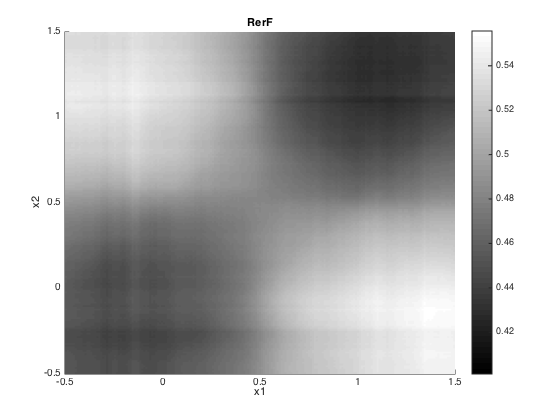 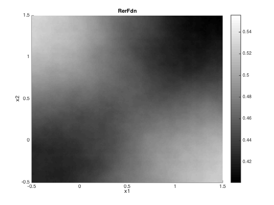 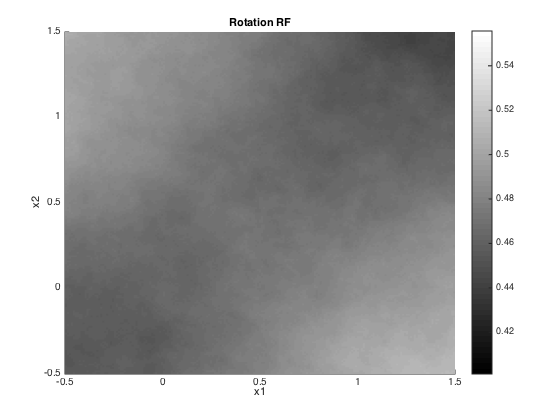 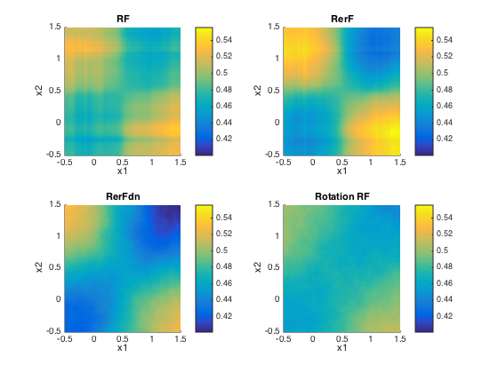 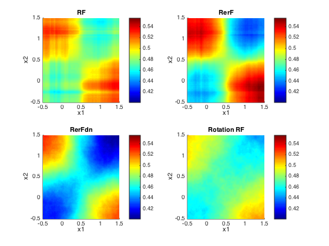 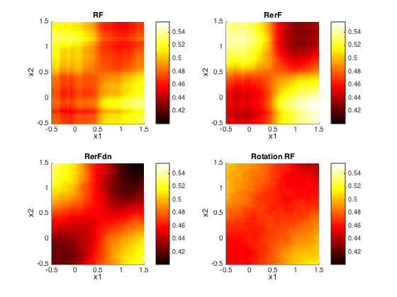 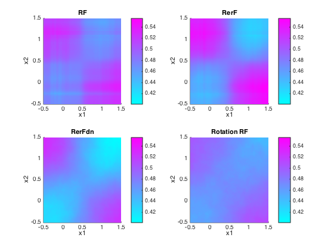 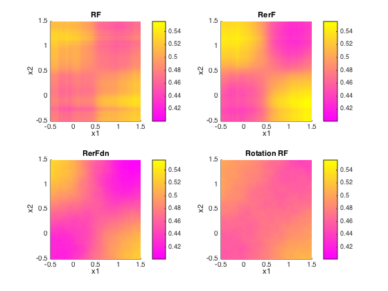 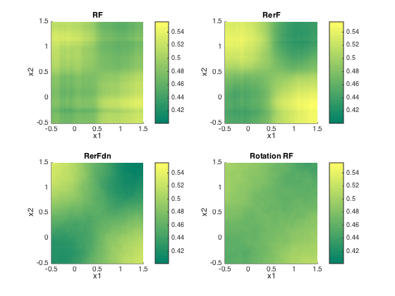 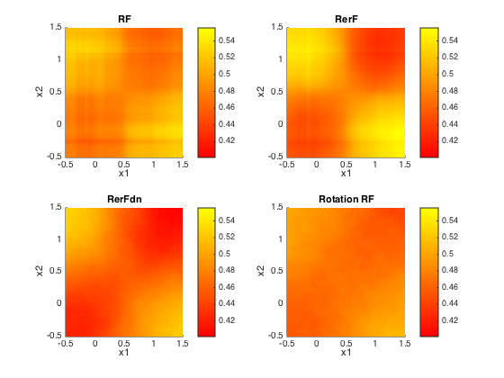 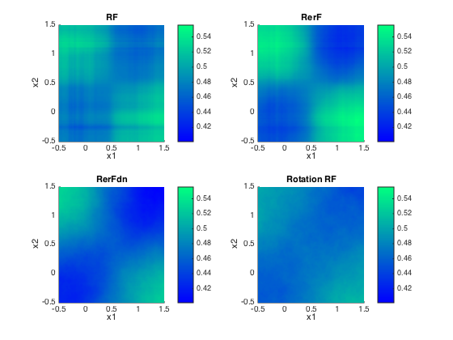